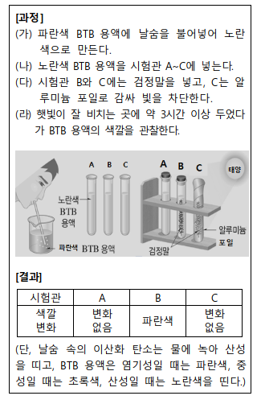

IV. 식물과 에너지
1. 광합성과 에너지
01. 양분을 만드는 광합성
- 광합성은 식물이 빛에너지를 이용하여 와 물을 원료로 양분을 만드는 과정이다.
- 광합성은 식물 세포의 에서 일어나며, 광합성이 일어날 떄 처음 만들어지는 양분인 포도당은 로 바뀐다.
- 수박 열매의 표면에서도 광합성이 일어난다. 그 까닭을 식물 세포에서 광합성이 일어나는 장소와 관련하여 설명해 보자.
... ...............................
1. 이산화탄소, 2.엽록체 녹말,
3. 수박 열매의 표면의 초록색은 열매의 표면을 이루는 세포에도 엽록체가 있다는 것을 뜻한다. 따라서 수박 열매의 표면에서도 광합성이 일어난다.
02. 광합성이 잘 일어나는 조건
- 광합성에 영향을 미치는 환경 요인에는 빛의 세기, , 온도가 있다.
- 광합성량은 빛의 세기가 수록 증가하며, 빛이 일정 세기 이상이 되면 더 이상 증가하지 않는다.
- 일조량이 많은 해에는 농산물의 수확량이 늘어난다. 그 까닭을 빛의 세기와 온도가 광합성에 미치는 영향과 관련하여 설명해 보자.
1. 이산화 탄소의 농도 , 2. 셀
3. 일조량이 많다는 것은 빛의 세기가 쎈 것을 뜻하고, 빛의 세기가 세면 온도도 어느 정도 높게 유지된다. 따라서 농작물이 광합성을 하기에 충분한 빛의 세기와 온도가 유지되어 광합성량이 증가하므로 수확량이 늘어난다.
03. 물을 끌어올리는 증산작용
- 은 식물체 속의 물이 수증기로 변하여 잎의 기공을 통해 공기 중으로 빠져나가는 현상이다.
- 기공은 2개의 로 둘러싸여 있으며, 기공을 통해 식물의 생명활동과 관련된 가 드나든다.
- 잎이 무성한 나무를 옮겨 심을 때 잎을 어느 정도 떼어 낸다. 그 까닭을 증산작용과 관련하여 설명해 보자.
... ...............................
1. 증산작용 2. 공변세포, 기체
3. 나무를 옮겨 심어 뿌리가 흙 속에 정착되기 전에는 나무가 충분한 물을 흡수하기 어렵기 때문에 잎의 수를 줄여 증산 작용의 양을 줄이려는 것이다.
tips_and_updates 그림은 잎에서 일어나는 광합성 과정을 나타낸 것이다.
이에 대한 설명으로 옳은 것만을 < 보 기 > 에서 있는 대로 고른 것은?
ㄱ. A는 기공을 통해 흡수된다.
ㄴ. B는 호흡으로 생명 활동에 필요한 에너지를 얻는 데 사용된다.
ㄷ. C는 물에 잘 녹기 때문에 밤에 체관을 통해 식물의 각 기관으로 운반된다.
① ㉠
② ㉡
③ ㉢
④ ㉠, ㉡
⑤ ㉠, ㉡, ㉢
... ...............................
정답 : 4
해설 : 광합성은 식물이 빛에너지를 이용하여 이산화 탄소와 물을 원료로 양분을 만드는 과정이다.
광합성으로 처음 만들어진 양분은 포도당이고 곧 녹말로 바뀌어 엽록체에 저장되었다가 주로 물에
잘 녹는 설탕으로 바뀌어 밤에 체관을 통해 식물의 각 기관으로 운반된다.
출처 : 2021년 1학기 중간고사
tips_and_updates 식물의 광합성 결과로 생성되는 물질을 모두 고른 것은?
< 보 기 >
㉠ 물
㉡ 산소
㉢ 포도당
㉣ 이산화탄소
① ㉠, ㉡
② ㉡, ㉢
③ ㉠, ㉢
④ ㉢, ㉣
⑤ ㉡, ㉢, ㉣
정답 : 2
해설 : 포도당, 산소
출처 : 2019년 1학기 기말고사
tips_and_updates 식물의 잎에 대한 설명으로 옳지 않은 것은?
① 식물의 광합성은 대부분은 잎에서 일어난다.
② 잎사귀가 넓을수록 증산작용이 잘 일어난다.
③ 앞면표피와 뒷면표피 사이의 세포들은 엽록체가 없어 색깔이 없다.
④ 겨울에는 잎이 다 떨어져도 호흡이 일어난다.
⑤ 표피는 잎의 가장 바깥부분으로 한 겹의 세포층으로 구성된다.
정답 : 3
해설 : 앞면표피와 뒷면표피 사이의 세포들은 엽록체가 존재
출처 : 2019년 1학기 기말고사
tips_and_updates 다음은 식물이 광합성을 하는데 필요한 물질을 알아보는 관찰 과정과 결과를 나타낸 것이다. 물음에 답하시오.

(1) 시험관 A, B, C의 BTB 용액 색깔 변화를 통해서 알 수 있는 것은?
① 검정말은 호흡할 때 산소를 사용한다.
② 검정말은 호흡할 때 이산화 탄소를 사용한다.
③ 검정말은 광합성을 할 때 산소를 사용한다.
④ 검정말은 광합성을 할 때 이산화 탄소를 방출한다.
⑤ 검정말은 광합성을 할 때 이산화 탄소를 사용한다.
정답 : 5
해설 : 시험관 A는 아무런 조작을 하지 않았으므로 색깔 변화가 없다. 시험관 B의 BTB 용액이 파란색으로 변한 것은 햇빛을 받은 검정말이 광합성을 하면서 이산화 탄소를 사용하였기 때문이다. 시험관 C는 햇빛이 차단되어 검정말이 광합성을 하지 않는다.
출처 : 2021년 1학기 기말고사
(2) 시험관 B와 C의 BTB 용액 색깔 변화를 비교하여 알 수 있는 광합성에 필요한 요소로 알맞은 것은?
① 빛
② 물
③ 산소
④ BTB용액
⑤ 이산화탄소
정답 : 1
해설 : 시험관 B는 햇빛을 받아 검정말이 광합성을 하여 용액 속 이산화 탄소의 농도가 감소하였고, 시험관 C는 알루미늄 포일로 싸서 빛이 차단되었기 때문에 검정말에서 광합성이 일어나지 않았다.
출처 : 2021년 1학기 기말고사
tips_and_updates 숨을 불어넣어 노란색으로 변한 BTB용액을 (가), (나), (다) 시험관에 넣은 후, (나)와 (다) 시험관에 검정말을 넣고 전등을 가까이에서 3시간동안 비추었다. 물음에 답하여라.
(1) 이 실험으로 산소의 양의 달라지는 시험관을 모두 고른 것은?
① (가)
② (나)
③ (다)
④ (가), (다)
⑤ (나), (다)
정답 : 5
해설 : 광합성과 호흡을 통해 산소의 양이 달라진다.
출처 : 2019년 1학기 기말고사
(2) 위 실험에 대한 설명으로 옳지 않은 것은?
① 검정말의 호흡 작용으로 BTB용액의 색이 파랗게 변하였다.
② 시험관의 BTB용액의 색을 관찰하면 녹아있는 이산화 탄소량의 변화를 알 수 있다.
③ (가) 시험관의 색은 시간이 지나도 변하지 않는다.
④ (나) 시험관에서는 검정말의 광합성과 호흡이 동시에 일어난다.
⑤ (다) 시험관의 검정말이 생산하는 기체를 석회수에 반응시킨다면 뿌옇게 흐려질 것이다.
정답 : 1
해설 : 검정말의 광합성 작용으로 BTB용액의 색이 파랗게 변하였다.
출처 : 2019년 1학기 기말고사
tips_and_updates 광합성이 일어나는 장소와 광합성 산물을 확인하기 위해 (가) 일정 시간 빛을 비춘 검정말 잎을 현미경으로 관찰한 후, (나) 검정말 잎을 에탄올에 넣고 물중탕을 하여 탈색하고 (다) 탈색된 검정말 잎에 아이오딘-아이오딘화 칼륨 용액을 떨어뜨리고 현미경으로 관찰하였다. 물음에 답하시오.
(1) < 보 기 >는 검정말을 탈색하는 (나) 과정을 거치는 까닭을 설명한 것이다. ㉠과 ㉡에 알맞은 말을 옳게 연결한 것은?
잎 세포 속 ( ㉠ )에서 ( ㉡ )가(이) 녹아 빠져 나오기 때문에 아이오딘-아이오딘화 칼륨 용액에 의한 색깔 변화를 잘 관찰할 수 있도록 하기 위해서이다.
㉠ , ㉡
① 엽록체 , 엽록소
② 엽록체 , 포도당
③ 엽록체 , 녹말
④ 엽록소 , 엽록체
⑤ 엽록소 , 포도당
정답 : 1
해설 : 검정말 잎을 에탄올에 넣고 물중탕을 하면 세포 기관인 엽록체 속에 들어있는 색소 물질인 엽록소가 에탄올에 녹아서 빠져나와 검정말 잎이 탈색된다.
(2) 이 실험에 대한 설명으로 옳은 것만을 < 보 기 > 에서 있는 대로 고른 것은?
< 보 기 >
ㄱ. (가)에서 관찰되는 초록색 알갱이는 엽록체이다.
ㄴ. 광합성은 식물 세포의 엽록체에서 일어난다.
ㄷ. (다)에서 광합성 결과 만들어진 양분이 포도당이라는 것을 확인하기 위해 아이오딘-아이오딘화
칼륨 용액을 이용한다.
① ㄱ
② ㄴ
③ ㄷ
④ ㄱ,ㄴ
⑤ ㄱ,ㄴ,ㄷ
정답 : 4
해설 :물중탕으로 탈색한 검정말 잎에 아이오딘-아이오딘화 칼륨 용액을 떨어뜨린 후 관찰하면 엽록체가 청람색을 띠고 있는 것을 볼 수 있다. 따라서 광합성은 식물 세포의 엽록체에서 일어나며, 광합성으로 만들어진 양분이 녹말이라는 것을 확인할 수 있다.
출처 : 2021년 1학기 기말고사
tips_and_updates 식물의 광합성량에 영향을 미치는 환경 요인 중에서 온도와 광합성량의 관계를 나타낸 그래프로 옳은 것은? (단, 빛의 세기와 이산화 탄소의 농도는 일정하다.)
①
②
③
④
⑤
정답 : 3
해설 : 광합성량은 온도가 높을수록 증가하며, 일정 온도 이상에서는 급격하게 감소한다..
출처 : 2021년 1학기 기말고사
tips_and_updates 다음은 광합성에 영향을 미치는 환경 요 인을 알아보기 위한 실험 과정과 결과를 나타낸 것이다. 물음에 답하시오.
(1) < 보 기 >는 위 실험 과정을 설명한 것이다. ㉠, ㉡, ㉢에 알맞은 말을 옳게 연결한 것은?
< 보 기 >
- (가)에서 1％ 탄산수소 나트륨 수용액을 사용하는 까닭은 광합성에 필요한 ( ㉠ )를(을) 충분히 공급하기 위해서이다.
- (나)에서 전등이 켜진 개수는 광합성에 영향을 주는 ( ㉡ )를(을) 조절하기 위한 것이다.
- (나)에서 가라앉힌 시금치 잎 조각은 빛을 받아 광합성을 하면 ( ㉢ )가(이) 생성되어 떠오른다.
| ㉠ | ㉡ | ㉢ | ||
| ① | 물 | 온도 | 포도당 | |
| ② | 수소 | 온도 | 이산화 탄소 | |
| ③ | 나트륨 | 빛의 세기 | 산소 | |
| ④ | 이산화 탄소 | 빛의 세기 | 포도당 | |
| ⑤ | 이산화 탄소 | 빛의 세기 | 산소 |
정답 : 5
해설 : 탄산수소 나트륨 수용액은 시금치의 광합성에 필요한 이산화 탄소를 공급하기 위해서이다. 전등이 켜진 개수는 광합성에 영향을 주는 빛의 세기를 조절하기 위한 것이다. 광합성이 일어나면 산소가 발생하여 시금치 잎 조각이 떠오른다.
출처 : 2021년 1학기 기말고사
(2)이 실험 결과에 대한 설명으로 옳은 것만을 <보기>에서 있는 대로 고른 것은?
< 보 기 >
ㄱ. 온도가 높을수록 광합성량은 계속 증가한다.
ㄴ. 빛의 세기가 강할수록 광합성량이 증가한다.
ㄷ. 시금치 잎 조각이 떠오르는 데 걸리는 시간이 짧을수록 광합성이 활발하게 일어나는 것이다.
① ㄱ
② ㄴ
③ ㄷ
④ ㄱ, ㄴ
⑤ ㄴ, ㄷ
정답 : 5
해설 : 빛의 세기가 셀수록 시금치 잎 조각이 떠오르는데 걸리는 시간이 짧아진다. 이는 빛의 세기가 셀수록 광합성이 활발하게 일어나 발생하는 산소의 양이 증가하기 때문이다.
출처 : 2021년 1학기 기말고사
tips_and_updates 눈금실린더 (가)~(다)에 같은 양의 물을 넣고,
그림과 같이 장치하여 햇빛이 잘 드는 곳에 두고 관찰하였다.
(단, 눈금실린더 (가)와 (나) 의 나뭇가지에 달린 잎의 수는 같으며, (다)의 나 뭇가지의 잎은 모두 땄다.)
물음에 답하시오.
(1) 이 실험에서 눈금실린더 속의 물에 식용유를 떨어뜨리는 까닭으로 옳은 것은?
① 햇빛을 잘 흡수하도록 하려고
② 눈금실린더 속 물의 증발을 막기 위해서
③ 나뭇가지에서 물을 빨리 흡수하도록 하려고
④ 산소와 이산화 탄소가 물에 녹는 것을 막기 위해서
⑤ 나뭇가지의 호흡에 필요한 양분을 공급하기 위해서
(2) 일정 시간이 지났을 때 눈금실린더 (가)~(다)에 남아 있는 물의 양이 많은 것부터 순서대로 나타낸 것은?
① (가), (나), (다)
② (가), (다), (나)
③ (나), (가), (다)
④ (다), (나), (가)
⑤ (다), (가), (나)
정답 : (1) 2
해설 : 식용유가 물 표면에 막을 만들어 물이 증발하는 것을 막는다. 정답 : (2) 4
해설 : 증산 작용이 활발할수록 눈금실린더의 수면은 낮아진다. 따라서 남아있는 물의 양이 많은 것은 잎이 없어 증산 작용이 일어나지 않은 눈금실린더 (다)가 물의 양이 가장 많이 남아있고 증산 작용이 가장 활발한 눈금실린더 (가)의 물의 양이 가장 적게 남아있다.
출처 : 2021년 1학기 기말고사
tips_and_updates 증산 작용에 대한 설명으로 옳은 것만을 <보기>에서 있는 대로 고른 것은?
< 보 기 >
ㄱ. 주로 빛이 없는 밤에 활발하게 일어난다.
ㄴ. 식물의 체온이 높아지는 것을 막는 효과가 있다.
ㄷ. 뿌리에서 흡수한 물이 줄기를 거쳐 잎까지 이동하는 힘이 된다.
ㄹ. 식물체 속 물이 잎맥의 물관을 통해 공기 중으로 빠져나가는 현상이다.
① ㄱ, ㄴ
② ㄴ, ㄷ
③ ㄷ, ㄹ
④ ㄱ, ㄴ, ㄷ
⑤ ㄴ, ㄷ, ㄹ
정답 : 2
해설 : 증산 작용은 식물체 속의 물이 수증기로 변하여 잎의 기공을 통해 공기 중으로 빠져나가는 현상이다. 기공이 열려있는 낮에 활발하게 일어나며 뿌리에서 잎까지 물이 이동하는 원동력으로 식물체의 체온이 높아지는 것을 막아주는 역할을 한다.
출처 : 2021년 1학기 기말고사
tips_and_updates 식물의 증산작용에 대한 설명으로 옳지 않은 것은?
① 식물체 내의 양분의 농도를 높인다.
② 잎의 앞면보다 뒷면에서 더 활발하게 일어난다.
③ 식물 체온이 높아지는 것을 막는 효과가 있다.
④ 잎에 도달한 물은 광합성을 비롯한 호흡 활동에 사용된다.
⑤ 뿌리에서 흡수한 물을 잎까지 끌어올리는 원동력이다.
정답 : 4
해설 : 잎에 도달한 물은 광합성을 비롯한 호흡 활동에 사용된다.
출처 : 2019년 1학기 기말고사